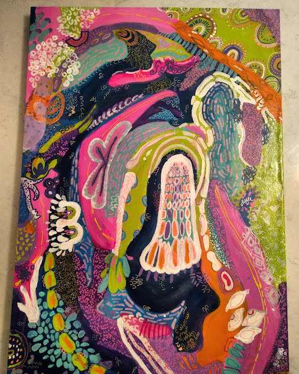

artist bio
I'm a Graphic Design student based in Chattanooga, TN. When I'm not at my job cooking, you can find me in the studio or at school. I began drawing in high school and painting shortlly aftere. I like to spend most of my time studying art theory, practicing new and exciting methods, and exeriencing other artists's work as much as possible.
I am highly influenced by artists like Jean-Michel Basquiat (Samo), David Lynch, Gustav Klimt,Jenny Holzer, and so many more.
